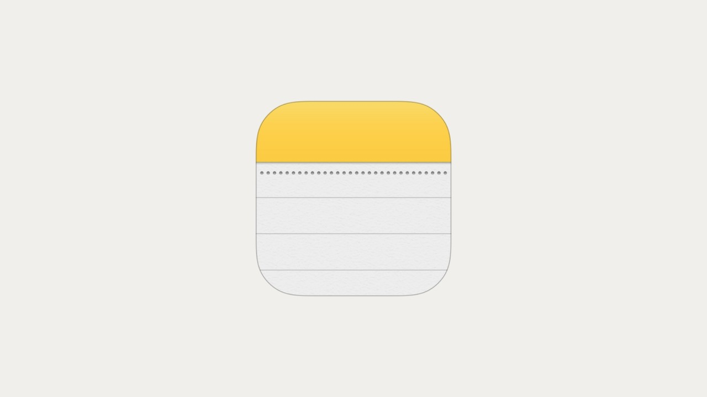
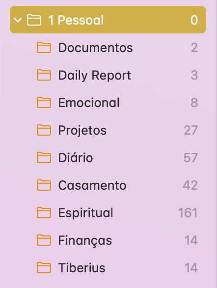
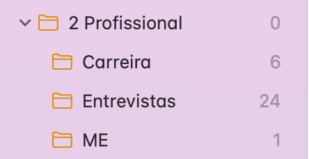
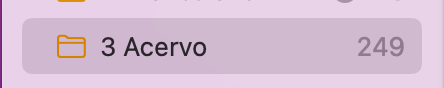
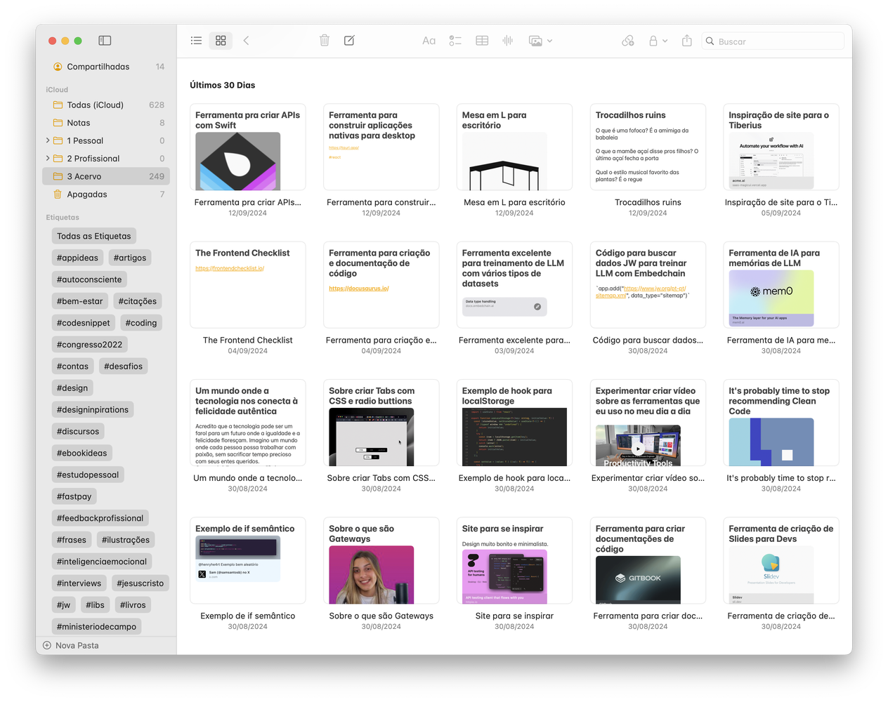

Artigo
Como organizo minha vida digital
Um método para trazer mais produtividade à sua vida.

Eu sempre me interessei por assuntos que giram em torno da produtividade. E me deparei com um livro chamado "O Método PARA" do Tiago Forte, onde basicamente, ele ensina como organizar nossos pensamentos, idéias e projetos em notas digitais utilizando o método PARA (um acrônimo de Projects, Areas, Resources e Archives).
Basicamente, este método consiste em separar suas notas em quatro categorias:
- Projetos: iniciativas que tenham um objetivo específico e prazo determinado. Um projeto com começo, meio e fim.
- Áreas: são áreas de responsabilidades que não têm um prazo determinado. Elas não têm um objetivo final concreto.
- Recursos: aqui se concentram os materiais ou informações de referência que podem ser úteis para os Projetos ou Áreas no futuro.
- Arquivos: tudo o que já foi concluído ou que não é mais relevante para os Projetos ou Áreas.
Esse método é bem interessante e, por muito tempo, me ajudou a organizar pedaços de informações úteis na vida para consulta posterior. Mas acabei por modificar um pouco esse método para a minha realidade e quero compartilhar isso com você hoje.
Meu método PPA
Vou exemplificar meu método utilizando o aplicativo Apple Notas, mas assim como o método PARA, ele pode ser aplicado em diversos aplicativos de notas do mercado como Notion, Evernote, etc.
Pessoal
Nesta pasta, eu organizo tudo relacionado à minha vida pessoal. Ela contém subpastas como Documentos, Espiritualidade, Casamento, Diário, Finanças e Projetos, onde cada uma armazena notas específicas sobre esses tópicos.

Profissional
Aqui eu gerencio minhas atividades de trabalho. Tem subpastas como Entrevistas (com insights e dicas) e ME (minha microempresa aberta). Dessa forma, cada aspecto da minha vida profissional tem seu próprio espaço, facilitando a organização e o foco.

Acervo
Esta pasta é uma espécie de repositório geral. Ela contém notas que ainda não foram categorizadas ou que podem servir como recursos úteis tanto para o pessoal quanto para o profissional. Não há subpastas aqui, e eu gosto de usar tags para ajudar na organização e busca de informações.

Regras
A seguir, algumas regras que defini para me ajudar a seguir uma estrutura eficiente:
- Nível de Pastas: As pastas só podem ir até o nível 2. Ou seja, só crio subpastas dentro das pastas principais Pessoal e Profissional, sem criar subpastas adicionais dentro dessas.
- Nomes de Pastas Claros e Genéricos: Gosto de optar por usar nomes diretos e universais, como Finanças, Casamento, Emocional, etc., sem adjetivos ou personalizações, como "Minhas Finanças" ou "Saúde Emocional".
- Nada Fica "Solto": Não há notas diretamente dentro das pastas principais Pessoal ou Profissional. Todas as notas precisam estar em subpastas apropriadas para evitar bagunça.
- Uso do Acervo: A pasta Acervo não tem subpastas. É o local temporário ou definitivo para notas que ainda não têm uma categorização clara ou que podem ser recursos amplamente aplicáveis.
- Tags para Detalhamento: Para uma organização mais fina, uso tags no app de notas, permitindo um detalhamento mais dinâmico, especialmente para filtrar e categorizar melhor as notas que estão dentro das pastas principais.
- Revisão Periódica: É importante ter um rotina de revisão para garantir que as notas do Acervo sejam categorizadas quando necessário, evitando acúmulo desorganizado.
E aí, o que achou desse método para organizar a vida digital? Você já usa algum no seu dia a dia?
